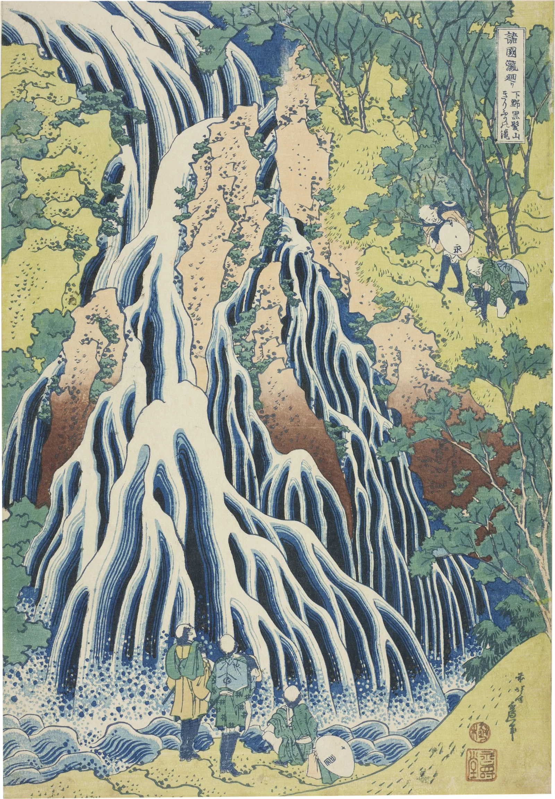
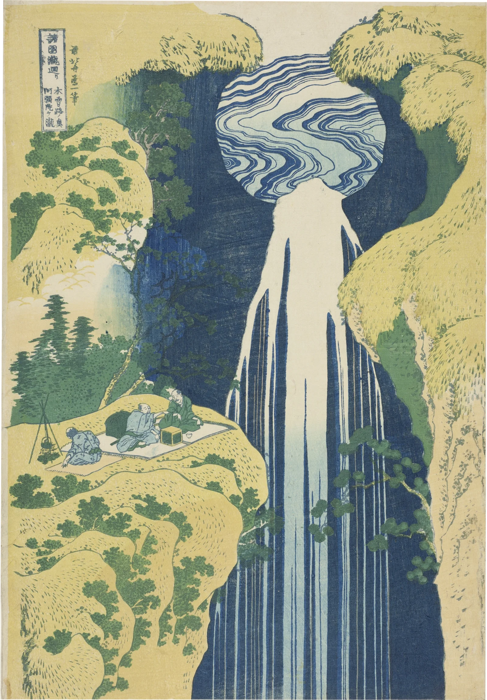

In 1832 Katsushika Hokusai was seventy-two, seventy-three by the Japanese count, and signing his prints zen Hokusai Iitsu, the former Hokusai, now Iitsu, a name he had taken at sixty when the sixty-year cycle of the calendar came round and a man was said to begin again. He had just drawn the Thirty-six Views of Mount Fuji for the publisher Nishimuraya Yohachi, and they had sold so well that ten more views were added to the thirty-six. What he drew next for the same house was water: eight tall sheets called A Tour of the Waterfalls in the Provinces. Kirifuri at Kurokami-yama in Shimotsuke; Amida and Ono, deep in the Kiso mountains; Yōrō in Mino; Rōben at Ōyama; the Kannon falls at Sakanoshita on the Tōkaidō; Aoigaoka in Edo itself; and the falls at Yoshino where Yoshitsune was said to have washed his horse.
Each is a different idea of what falling water does. At Amida it pours from a round pool like a curtain from a rod. At Ono it is a single white column with men on a bridge in its roar. At Kirifuri it does not fall clear of the rock at all but clings to it, splitting around every ledge into long fingers, each one outlined, each carrying its stripes, until at the foot it breaks into dots.

Kirifuri means falling mist. The fall comes down the flank of Kurokami-yama, the Black-Haired Mountain, the old name for Nantai above Nikkō, a peak that pilgrims had climbed as the body of a god since the monk Shōdō first reached its summit in 782. By Hokusai's day the road to Nikkō was crowded with them, going up to the mountain and to the shrine where the first Tokugawa shōgun lay. Two of them are coming down the steep bank on the right, one with his round hat slung from his shoulders, the other bent double and feeling for his footing with a hand on the ground. Three more have already reached the pool. Two stand in the spray with their heads tipped back; the third has sat down with his hat on the ground beside him. Only the noise is missing.
The blue is why it looks the way it does. Prussian blue had been made by accident in a Berlin workshop around 1705 and reached Japan through the Dutch at Nagasaki as a rarity; only at the end of the 1820s, when Chinese makers in Canton began to produce it cheaply and ship it in bulk, could a print publisher afford it. In Edo they called it bero-ai, Berlin indigo. The old blues were indigo, which printed dull, and dayflower, which faded in a season of light. The new one was deep, it held, and wiped thin on the block it went to the palest wash. Here it is the water itself: the dark between the fingers, the lighter blue along their edges, and the white, which is only the paper left bare.
Amida is a different water altogether. The fall is in the hills of Gujō in Mino, a long walk off the Kiso road, and takes its name from a story: a monk at prayer in the cave behind it, in the sixteenth century, saw the Buddha Amida appear in the falling water. Hokusai brings the river to the top of the cliff as a round pool of curling lines, set in the dark rock like a mirror or a halo, and lets it go over the edge as a single white rope that hardly divides before it drops out of the bottom of the sheet. Across the gorge three men have spread a mat at the edge of the drop. One tends a fire under a kettle hung from three poles; the other two sit with a box of food and sake between them and look across at the water, which is what they came for.

Two years later, in a postscript to his One Hundred Views of Mount Fuji, Hokusai wrote that nothing he had drawn before seventy was worth noticing; that at seventy-three he had begun to understand how birds and beasts, insects and fish are made, and how grasses and trees grow; that at ninety he would see into the heart of things, and at a hundred and ten every dot and every line he drew would be alive. He died at eighty-eight, still drawing. The water in this print is all line, cut in cherry wood by someone else's hand and rubbed onto mulberry paper, and it has been holding still for nearly two hundred years.